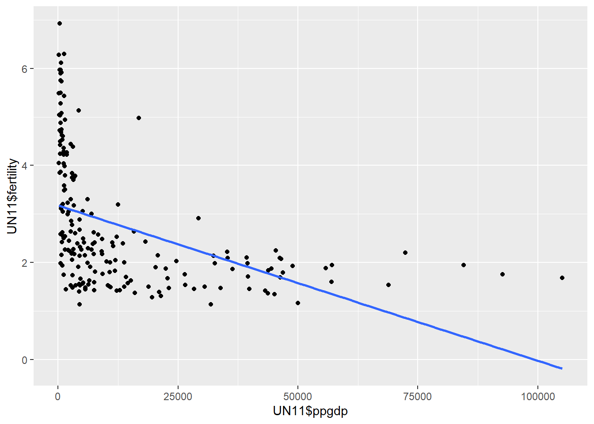
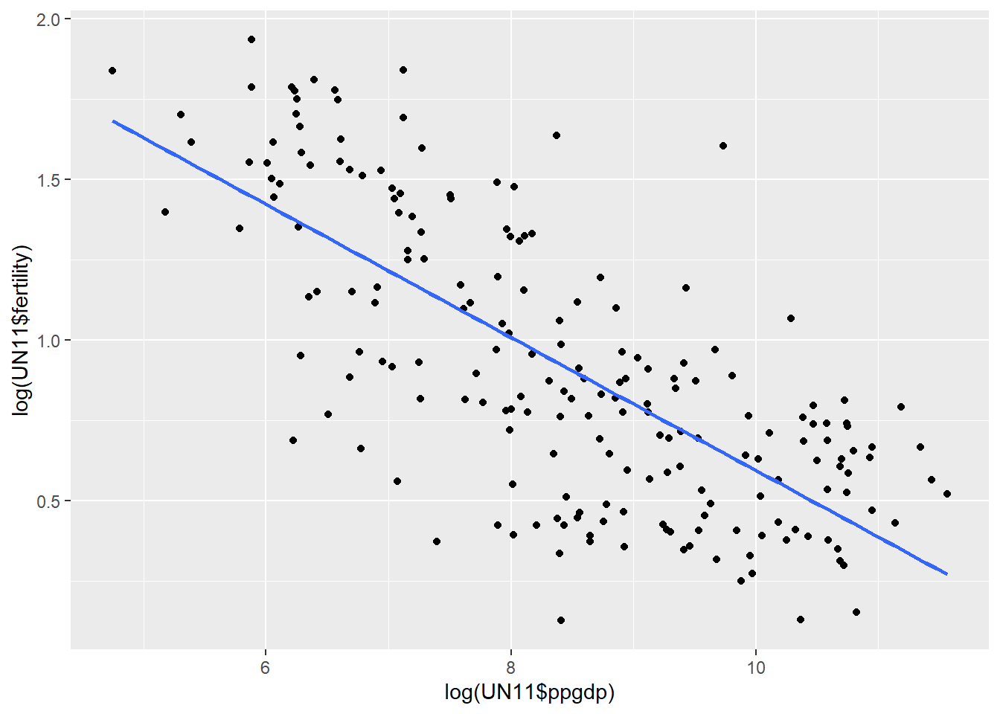

Code
library(tidyverse)
library(alr4)
library(smss)
library(fastDummies)
library(GGally)Error in library(GGally): there is no package called 'GGally'Code
knitr::opts_chunk$set(echo = TRUE)library(tidyverse)
library(alr4)
library(smss)
library(fastDummies)
library(GGally)Error in library(GGally): there is no package called 'GGally'knitr::opts_chunk$set(echo = TRUE)The predictor variable is ppgdp and the response variable is fertility.
A straight line doesn’t totally fit for this graph.
ggplot(UN11, mapping = aes(x = UN11$ppgdp, y = UN11$fertility))+
geom_point()+
geom_smooth(method = lm, se = F)`geom_smooth()` using formula 'y ~ x'
I do not think this is practical way to view the data. While it has a similar trend line to the previous graph, I still do not think viewing the data with logs is an accurate way to represent the relationship between the two variables.
Although I suppose it would be practical on second thought because it’s clearly showing what the above graph is trying to display. This is a more drastic negative correlation.
ggplot(UN11, mapping = aes(x = log(UN11$ppgdp), y = log(UN11$fertility)))+
geom_point()+
geom_smooth(method = lm, se = F)`geom_smooth()` using formula 'y ~ x'
This question is a bit challenge but I think the slope would decrease because the exchange rate decreases with conversion.
The correlation wouldn’t change because the strength of the relationship isn’t affected.
summary(pairs(water[2:8]))
Length Class Mode
0 NULL NULL BSAAM to OPBPC seem to be positively correlated with each other. This leads me to think that OPBPC, OPRC and OPSLAKE have significant runoff because the high level of precipitation is positively correlated with the volume of runoff measured by BSAAM.
pairs(Rateprof[8:12])
According to the scatter plot matrix, we can observe a few relationships of the various entries. Helpfulness and quality have a strong positive correlation. Clarity and quality and helpfulness and clarity also have a very strong positive correlation, all of which is expected. It’s when easiness comes it there is less positive correlation. I would imagine easiness and clarity would have a stronger correlation but here there appears to be less of a positive relationship.
raterInterest is the variable with the least correlation with any of the other variables.
Creating dummy variables. So now there are many different columns as dummy variables but now it’s impossible to run a regression analysis.
student.survey <-dummy_cols(student.survey, select_columns = "pi")Error in dummy_cols(student.survey, select_columns = "pi"): object 'student.survey' not foundstudent.survey <-dummy_cols(student.survey, select_columns = "re")Error in dummy_cols(student.survey, select_columns = "re"): object 'student.survey' not found#ifelse(student.survey$pi == 'conservative', )
#conservative <- ifelse(student.survey$pi == 'conservative', 1,0)
#sl_conser <- ifelse(student.survey$pi == 'slightly conservative', 2,0)num_pi <- model.matrix(~pi, data = student.survey)Error in terms.formula(object, data = data): object 'student.survey' not foundnum_re <- model.matrix(~re, data = student.survey)Error in terms.formula(object, data = data): object 'student.survey' not foundsummary(lm(num_pi ~ num_re))Error in eval(predvars, data, env): object 'num_pi' not foundsummary(lm(student.survey$hi ~ student.survey$tv))Error in eval(predvars, data, env): object 'student.survey' not foundggplot(student.survey, aes(re, ..count..)) + geom_bar(aes(fill = pi), position = "dodge")+
labs(title = "Relationship between political ideology and religiosity", x = "Religiosity", fill = "Political Ideology")Error in ggplot(student.survey, aes(re, ..count..)): object 'student.survey' not foundStudents who occasionally go to church tend to be very liberal, while students who lean conservative go to church more frequently. Overall, students who lean closer to the liberal ideology go to church less, if at all, and students who move right on the political spectrum tend to attend church more frequently.
plot(student.survey$hi, student.survey$tv)Error in plot(student.survey$hi, student.survey$tv): object 'student.survey' not foundAccording to the linear model and by visualizing the trend, it appears there is not much of a correlation between hours of TV watched and high school GPA.